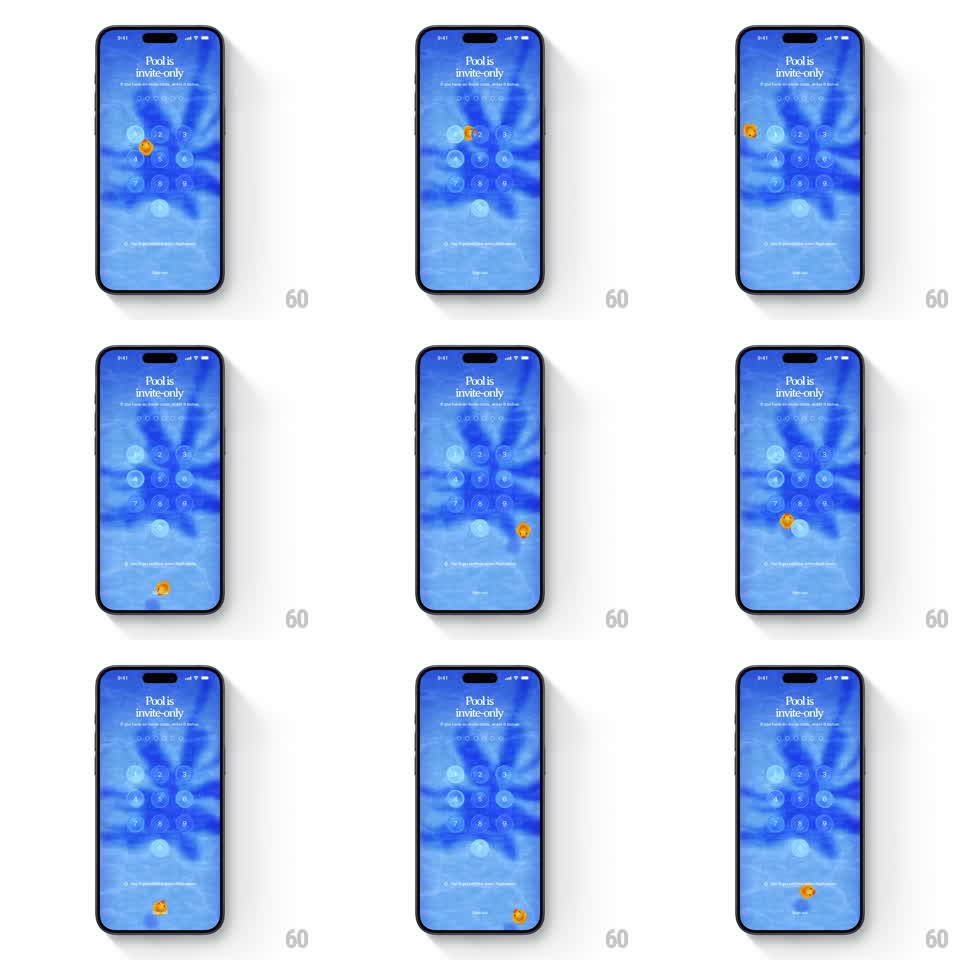

Media
Frame-by-frame

Rebuild this interaction 1:1: Pool's invite passcode screen - a tiny orange rubber duck floats across the watery blue keypad screen, drifting and sliding in response to device tilt.

Rebuild this interaction 1:1: Pool's invite passcode screen - a tiny orange rubber duck floats across the watery blue keypad screen, drifting and sliding in response to device tilt. ## Integration Integration: stack-agnostic spec - springs given as stiffness/damping, timed motions as duration + curve; map every value to your framework and animation library of choice. ## Scene Invite screen on a rippling blue water gradient: "Pool is invite-only" serif title with subcopy, a row of passcode dots, a bubble-style numeric keypad, a legal line, and a Sign in link. The orange duck starts small near the keypad. ## Motion spec Pattern: gyroscope-driven floating mascot with water physics. - The duck drifts freely: tilting the phone accelerates it in the tilt direction (gravity ~300px/s2), with water drag easing it to a stop (velocity decay ~0.92 per frame). - It bob-rotates with movement (rotateZ up to +/- 15 degrees against velocity) and leaves a faint wake ripple that expands and fades (scale 1 -> 2.2, opacity 0.4 -> 0, 800ms). - On hitting a screen edge it bounces softly (velocity * -0.5) with a squash (scaleY 0.9 for 120ms). - Idle: it treads water near its last position (+/- 4px bob, 2s). - Keypad bubbles also jiggle faintly with tilt (+/- 2px), subordinate to the duck. ## Calibration - The duck is small (about a keypad key's width) and bright orange - a toy in a pool. - Physics must feel wet: slow acceleration, long glides, soft bounces. ## Reduced motion Duck bobs in place; no tilt response. ## Don't miss - The duck never occludes the passcode dots or title - it swims under the UI layer. - The water background keeps rippling independently of the duck.